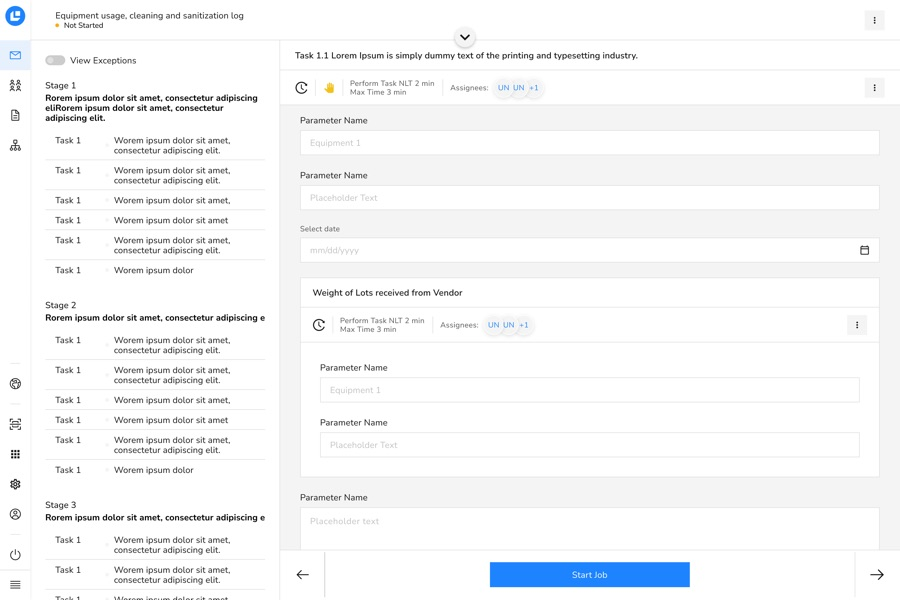
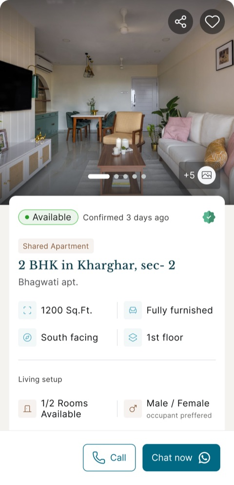
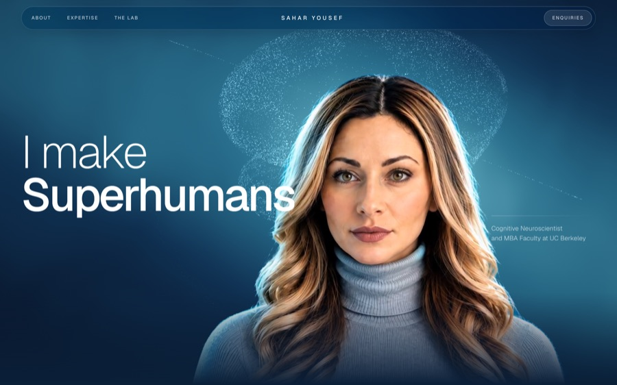

Leucine
Simplifying complex workflows for pharma manufacturing.

Product Designer, Shruti Kale
Trained as an engineer. Spent the years since figuring out why some products feel effortless and others don’t – then building the ones that do.
It started with engineering – code, systems, hardware. Somewhere in there I noticed something: a product could be technically correct and still feel bad to use. That question never really left me. It’s the same one I ask now, just pointed at screens instead of circuits.
I don’t think finishing a task means the experience was good. I care about what someone feels while they’re doing it – calm, confident, confused, overwhelmed. A form can work perfectly and still feel bad if the language is unclear or you don’t know why it’s asking what it’s asking. That gap – between something working and something feeling right – is basically where I live.
Since 2021
Four projects, from pharma factory floors to a personal experiment in motion and AI.
Simplifying complex workflows for pharma manufacturing.

Turning manual admin work into a smarter system.

Making rental search more personal and trustworthy.

Exploring AI, motion, and visual storytelling for the web.

Pick something around her
Taking photos of things I’ll probably never post.
Getting lost in books and forgetting what time it is.
I really like clothes. Probably more than a reasonable person should.
Making terrible sketches. The standards in my head are unfortunately much higher than my hands.
I’ll almost always choose somewhere I’ve never been.
The list only gets longer. I’ve made peace with that.